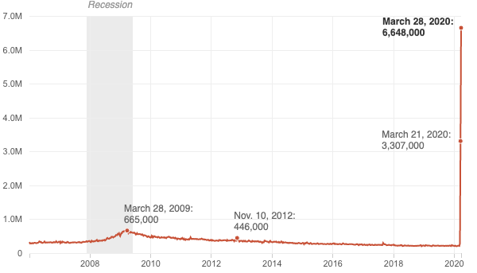

<% if (COPY.labels_trend.headline) { %>
<%= t.smarty(COPY.labels_trend.headline) %>
<% } %>
<% if (COPY.labels_trend.subhed) { %>
<%= t.smarty(COPY.labels_trend.subhed) %>
<% } %>
aria-label="<%- COPY.labels_trend.screenreader %>"
<% } %>
>

<% if (COPY.labels_trend.footnote) { %>
<% } %>